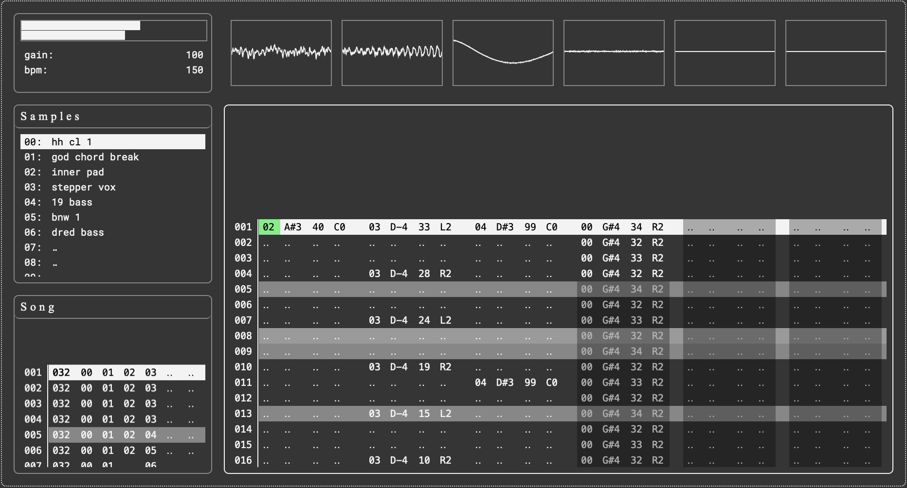
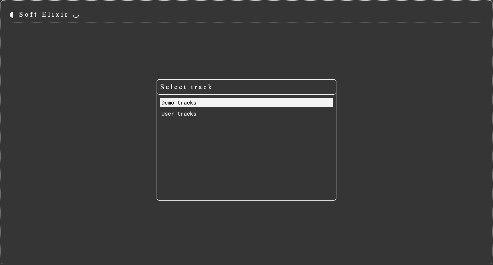
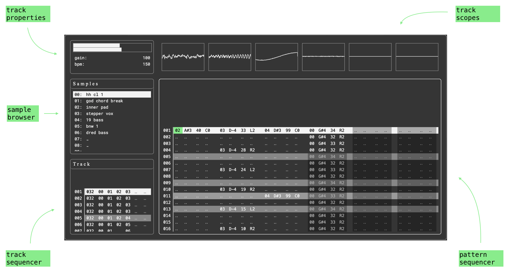
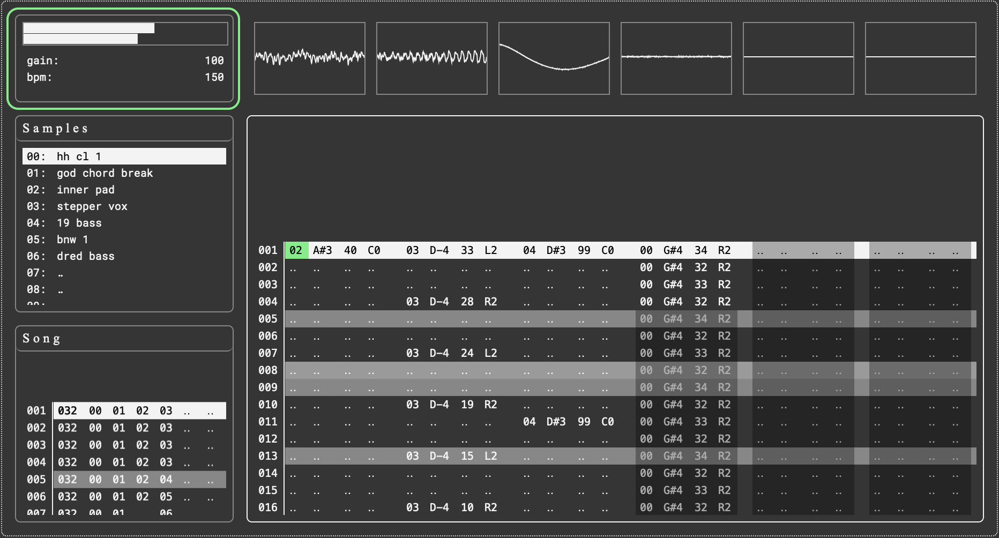
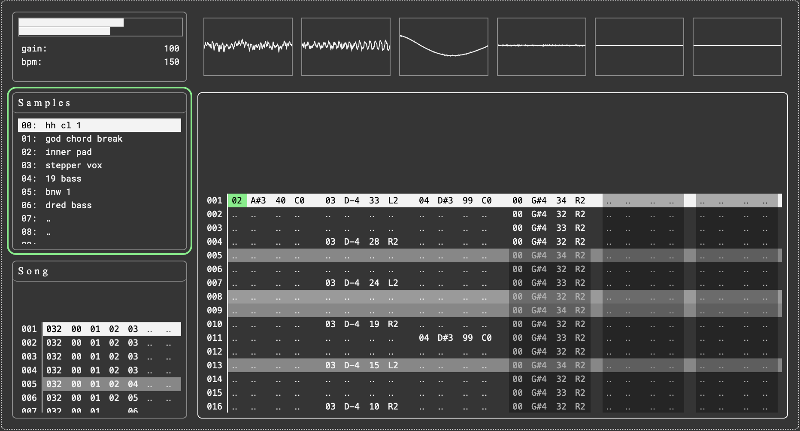
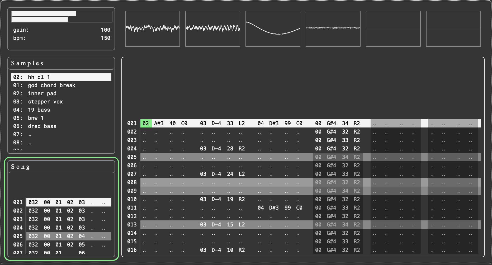
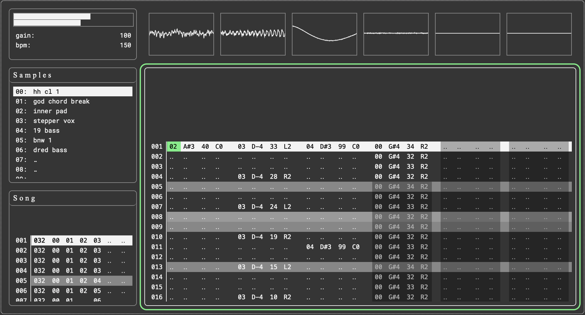
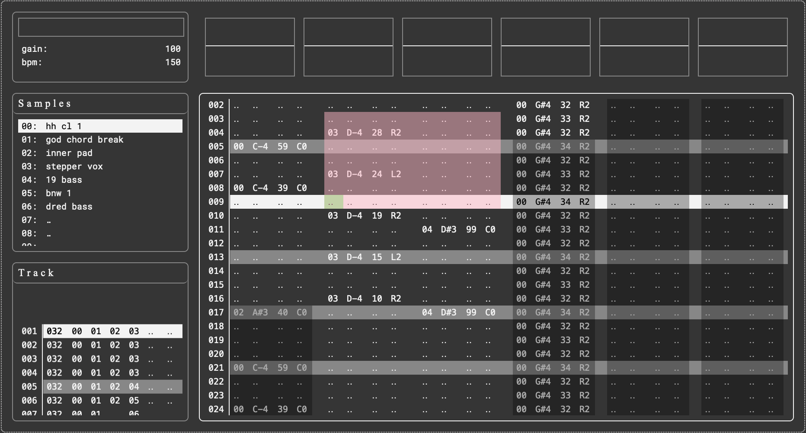
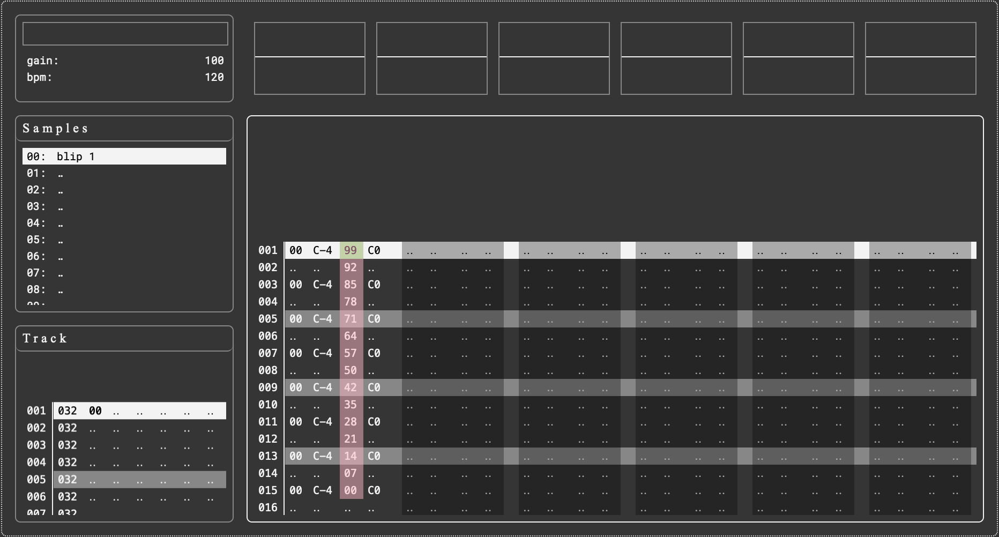
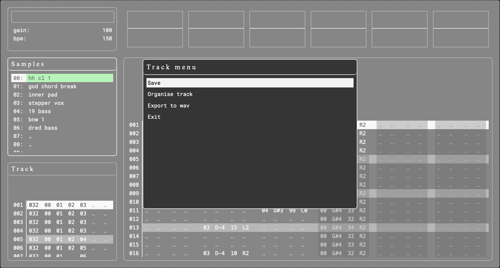

User Guide
- Getting started
- The main window
- Track properties
- Sample browser
- Track sequencer
- Pattern sequencer
- Working in the grids
- Other functions
A full list of controls can also be found here.
1. Getting started
Soft Elixir is a sample-based music tracker inspired by programs like Little Sound Dj and Renoise. However unlike other trackers, Soft Elixir runs entirely in the browser.
When you open the app, the first thing you see is the track select menu.
Since Soft Elixir is a keyboard-only app, you won't be using the mouse. Use the following controls to select and open a track:
[arrows]
navigate up and down
[enter]
open a track
Open a demo track, or navigate to the user tracks page and follow the instructions at the bottom of the window.
2. The main window
The main window is split into five regions:
Navigating regions
To navigate between regions, use the following controls:
[q] + [arrow]
navigate regions up/down/left/right
[esc]
toggle track menu
All of the regions contain editable data except for the track scopes region, which is display only.
3. Track properties
The track properties section contains the master VU meter, the master gain value, and the track BPM value.
Use the following controls to edit the master gain and the track BPM:
[f] + [right]
increase value by one
[f] + [left]
decrease value by one
[f] + [up]
increase value by ten
[f] + [down]
decrease value by ten
4. Sample browser
The sample browser contains 50 slots that can be loaded with audio samples.
The following controls are used to add and remove samples in the sample browser:
[up/down]
navigate through sample slots
[f]
open sample selector window
[e]
(e)rase sample
Sample size is limited to 2MB.
5. Track sequencer
The track sequencer is where you create patterns and order them to make a track. See the section working in the grids to learn how to navigate and enter data in the track sequencer.
From left to right, the columns in the track sequencer represent the following:
- Step number
- Step length
- Pattern columns 1-6
Step number
The number of the selected track step. This value is not editable.
Step length
The step length column controls the amount of ticks in the selected track step.
If any patterns in the track step are shorter than the step length value, they will be looped for the remainder of the step.
If any patterns in the track step are longer than the step length, they will be cut off at the end of the step.
Pattern columns
Each track step can contain six patterns, as indicated by the six pattern columns.
Along with the normal grid editing functions found here, the track sequencer has a couple more options to make creating and editing patterns smoother:
[f] + [j]
create a pattern in the next empty slot
[f] + [k]
(k)opy the currently selected pattern to the next available slot
Play/pause/loop
From the track sequencer, you can play the whole track or loop a section of the track.
[space]
play/pause the track or track selection
[m] + [1-6]
toggle mute pattern 1-6
[n] + [1-6]
toggle solo pattern 1-6
You'll notice the pattern sequencer scrolls along with the current step. Moving from the track sequencer to the pattern sequencer whilst playing will loop the current track step and allow you to edit the patterns.
To loop a section, use grab mode to select some steps. Press [space] whilst still in grab mode to create and start the loop. Looped step numbers are coloured pink.
To clear the loop, use the following command:
[g] + [e]
(e)rase track loop
6. Pattern sequencer
The pattern sequencer is where you edit the six patterns in the currently selected track step. See the section working in the grids to learn how to navigate and enter data in the pattern sequencer.
Pattern columns
From left to right, the four columns in each pattern represent the following:
sample id
a value in the range 00 - 50 that represents a sample in the sample browser
pitch
a value in the range C-0 - D#8
gain
a value in the range 00 - 99
pan
a value in the range L4 - R4, with C0 representing the center
When you enter or edit a value in the pattern sequencer, the musical event is previewed automatically.
To avoid the problem of listening to long samples every time you enter an event, the event preview stops when you release the [f] key.
You can also preview the entire pattern row with the following controls:
[p]
preview row
[p] + [up]/[down]
preview nav up/down
Play/pause/loop
From the pattern sequencer, you can play the whole pattern or loop a section of the pattern.
[space]
play/pause the pattern or pattern selection
[m] + [1-6]
toggle mute pattern 1-6
[n] + [1-6]
toggle solo pattern 1-6
Playing from the pattern sequencer loops the current track step and you to edit the patterns. Moving to the track sequencer whilst playing exits pattern edit mode and plays the track as normal.
To loop a section, use grab mode to select some steps. Press [space] whilst still in grab mode to create and start the loop. Looped step numbers are coloured pink.
To clear the loop, use the following command:
[g] + [e]
(e)rase pattern loop
Event kill
To kill a sample before it's finishing playing, use the following command:
[k]
[k]ill event
Kill events are shown as stars in the pattern sequencer.
Pattern length
Pattern length is independent of track step length. To set the length of the pattern, use the following command on the row you want to make the final:
[l]
set pattern (l)ength
The pattern will be looped for the duration of the track step.
The area beyond the end of the pattern is shaded to indicate that it is no-longer editable, and the looped events are shown as a guide.
To set the length of the pattern to the length of the track step, use the [l] command in the bottom row of the pattern sequencer.
7. Working in the grids
Navigating
[arrows]
move
[a] + [arrows]
jump (a)ll the way to the end in any direction
[s] + [right] / [left]
(s)kip between patterns
[s] + [up] / [down]
(s)kip between events
Editing data
[f]
(f)ill an empty cell with a value
[f] + [right] / [left]
increase/decrease cell value by one
[f] + [up] / [down]
increase/decrease cell value by one step
[e]
(e)rase cell value
[e] + [right]
(e)rase whole event
[e] + [right] + [right]
(e)rase whole row
[z]
undo
[y]
redo
Cut/copy/paste
[c]
(c)opy cell value
[x]
cut cell value
[v]
paste copied value
Grabbing
Use grab mode to select and edit multiple cells.
[g]
toggle (g)rab mode
[g] + [right]
select a whole musical event
[e]
(e)rase grabbed cells
[c]
(c)opy grabbed cells
[x]
cut grabbed cells
[v]
(p)aste copied cells
While in grab mode, all of the navigating and editing commands work as normal.
To edit a whole column, enter grab mode on the first cell. Then, press [a] and [down] to jump to the end of the column. Try using [f] + [arrows] to increase and decrease values across the whole column.
To copy a whole pattern, press [g] + [right] to select a whole event. Then, press [a] + [down] to jump to the end of the pattern. Use [c] or [x] to copy or cut the pattern.
Interpolation
The interpolation command creates a linear ramp between the values at each end of a grabbed region.
[i]
interpolate between two values
It can be used in any column, but the most common use case is creating gain ramps in the pattern editor.
To create a delay effect, enter multiple events into a pattern. In the gain column of the final event, enter a zero. Enter grab mode and select all cells in the gain column from the first to the last event before pressing [i]. The values between the first and the last cells are auto-filled with decreasing values, creating a delay-like effect.
8. Other functions
Use the following command to access the track menu:
[esc]
toggle track menu
Save
Tracks are saved in browser storage, and are accessed from the users page of the track select window.
If you save a demo track, it will be copied to the users page of the track select window.
A note on browser storage:
Browser storage is volatile, and can be erased when clearing browser data. Always export your tracks to .wav to be sure!
Organise track
The organise patterns function tidies up your track by sorting pattern numbers in the order they appear in the track sequencer.
The organise samples function tidies up your samples by removing empty spaces from the sample browser.
Export to wav
To export your track, set a start and end step with the usual [f]-based editing controls.
Once the track has been played through, it will be automatically downloaded as a .wav file.
Exit
Exit to the track select menu.